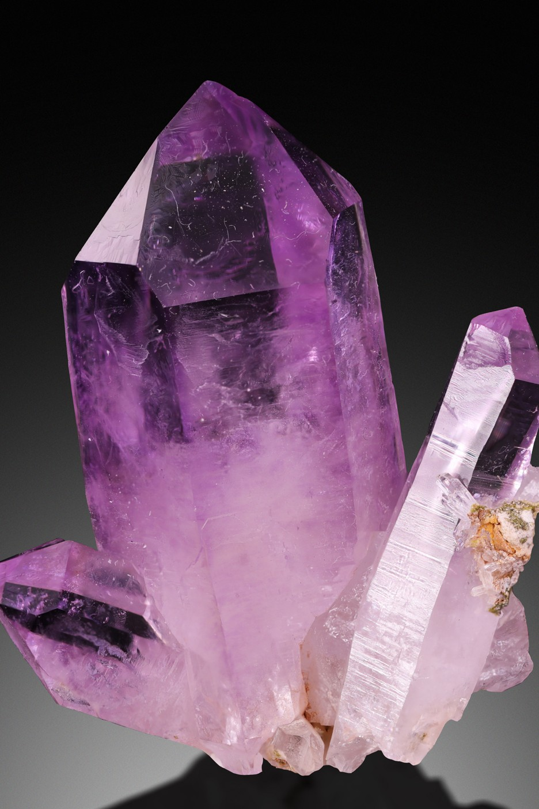
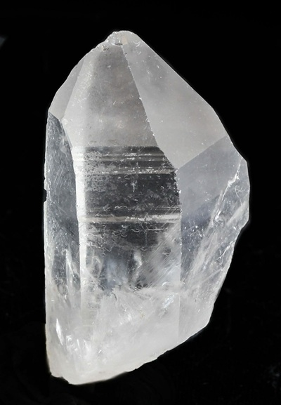
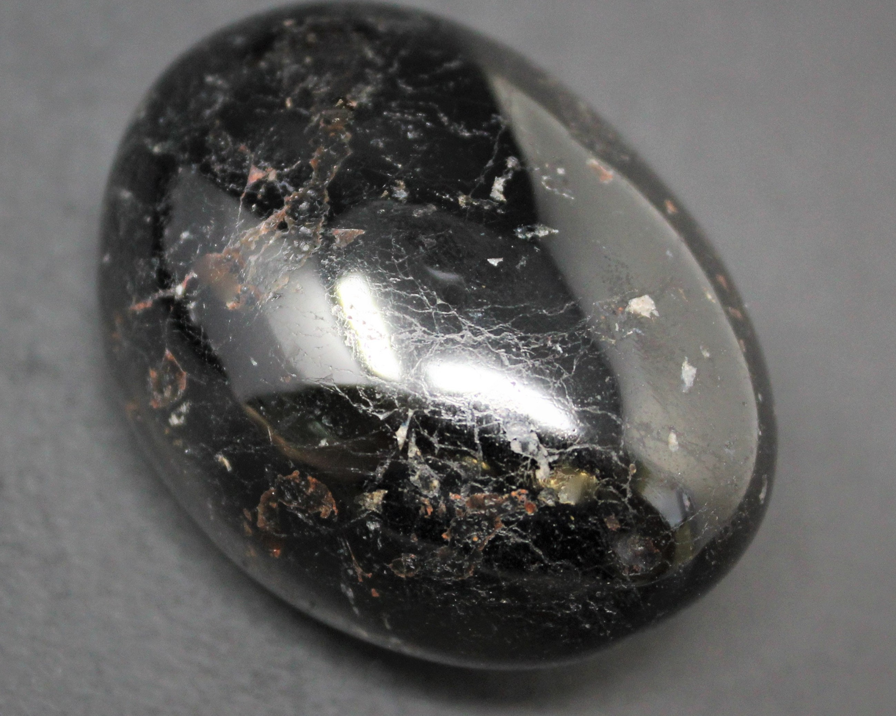
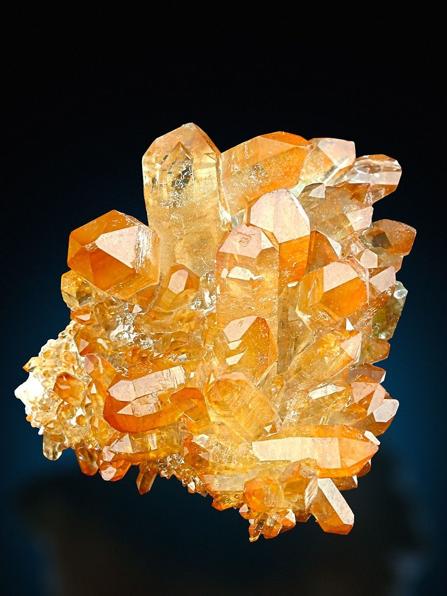
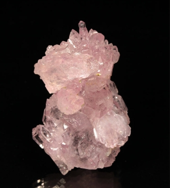
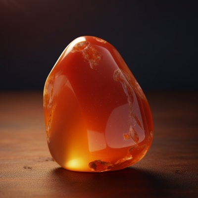
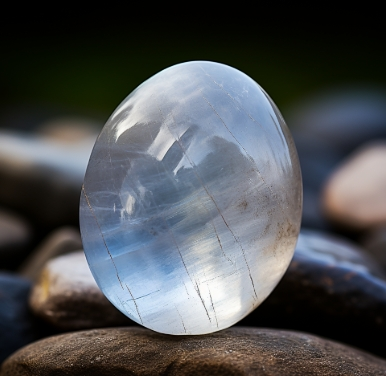
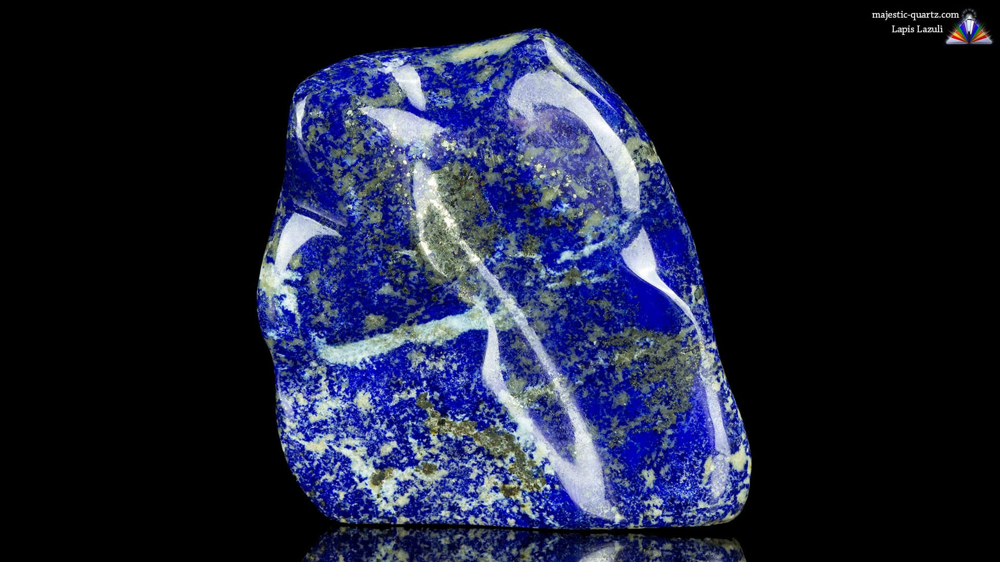
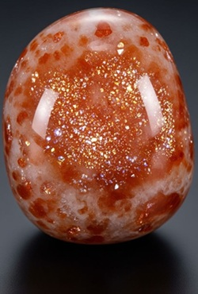

Ancient wisdom, esoteric traditions, and the tools of the craft — deep education for serious students of the occult.

Crystal kits, beginner altar setups, journals, and Ambrosia's handcrafted tarot deck — everything you need to build a meaningful practice.
Visit the ShopCrystals are not magic in themselves — they are amplifiers and allies. They work by resonating with specific energetic frequencies and helping you attune to those frequencies through intention and consistent use. Here is a practical guide to the stones every practitioner should know.

The most versatile crystal in existence. Clear Quartz amplifies the energy of any intention, any other crystal, and any working it's placed near. If you own one crystal, make it this one. It can substitute for almost any other stone in a pinch.

The premier stone for psychic protection and energetic boundaries. Place it at the four corners of your home, carry it when entering draining environments, or hold it during shadow work to stay grounded. It absorbs and transmutes negative energy rather than simply deflecting it.

One of the only crystals that never needs cleansing — it transmutes negative energy rather than absorbing it. Citrine is the stone of abundance, joy, and solar energy. It's traditionally kept in cash registers and wallets to attract prosperity and maintain positive energy in business spaces.

The stone of unconditional love — for others, and crucially, for yourself. Rose Quartz works on the heart chakra to open you to giving and receiving love, to heal emotional wounds, and to attract relationships built on genuine connection rather than need or fear.

Where Rose Quartz opens the heart, Carnelian ignites the will. It is the stone of courage, motivation, and creative fire — particularly useful when you know what you need to do but can't seem to start doing it. Ancient Egyptians called it "the setting sun" and used it in protective amulets for the dead.

Sacred to moon goddesses across cultures, Moonstone enhances intuition, emotional intelligence, and the ability to flow with cycles rather than fight them. It is particularly powerful for women's work, for anyone navigating major life transitions, and for deepening psychic sensitivity.

One of the oldest spiritual stones in the world — ground into powder by the Egyptians to paint the eyes of their gods, used in the burial mask of Tutankhamun, and prized by Renaissance artists for the blue of the Virgin Mary's robes. Lapis governs truth-telling, clear communication, and access to ancient wisdom.

Sunstone carries bright solar energy — confidence, vitality, and optimism. It clears stagnant emotions, strengthens personal power, and helps you step into your authentic light.
An altar is simply a dedicated, intentional space for your practice. It doesn't need to be large, elaborate, or permanent — a shelf, a windowsill, or a small tray on your dresser qualifies. What matters is that the space is treated with intention and kept clear of mundane clutter.
A traditional altar represents the four elements: Earth (North) — a stone or soil; Air (East) — incense or a feather; Fire (South) — a candle; Water (West) — a small bowl of water or seashell. You don't need all four to start, but understanding what each represents helps you build intentionally.
Add objects that hold personal meaning — photos of ancestors or loved ones, items from nature, symbols of deities or forces you work with, crystals chosen for your current intentions, and seasonal elements that connect your practice to the turning of the year. Your altar should feel alive to you, not like a display.
An altar you ignore becomes stagnant. Light a candle, rearrange objects as your intentions shift, remove what no longer resonates, and add what does. Some practitioners spend five minutes at their altar every morning as a grounding practice. Frequency of engagement matters more than elaborate ritual.
Everything you need to build your first altar: elemental representation objects, a pillar candle, a crystal starter set, a small selenite charging plate, and a setup guide written by Jennifer. Ready to use the day it arrives.
Order Your Kit — $34.95Modern occult practice doesn't exist in a vacuum — it is built on thousands of years of accumulated wisdom from traditions most people have never been taught to take seriously. Understanding where your practice comes from makes it richer, more grounded, and more powerful. This is the education the Academy exists to provide.
The ancient Egyptians did not separate religion, magic, and science into distinct categories — for them, understanding the laws of the universe and working within those laws was a single unified practice. The temples were schools as much as places of worship, and the priests and priestesses who served within them were trained in medicine, astronomy, ritual, and what we would now call esoteric philosophy.
The concept of Heka — the Egyptian word often translated as "magic" — was understood as the primal force of creation itself. Heka was not supernatural; it was the underlying current of reality that the trained practitioner learned to work with consciously. This is a distinction that runs through virtually every genuine occult tradition: magic is not fantasy. It is applied natural philosophy.
The Book of the Dead (more accurately, the Book of Coming Forth by Day) was a funerary text but also a spiritual instruction manual — a guide to navigating the inner planes and emerging transformed. Many modern initiatory traditions, from Freemasonry to the Hermetic Order of the Golden Dawn, drew directly from Egyptian symbolism and structure.
Kabbalah is the mystical heart of Judaism — a system for understanding the nature of God, creation, and the human soul through a map called the Tree of Life. The Tree consists of ten emanations called Sephiroth, connected by 22 paths that correspond to the 22 letters of the Hebrew alphabet and, in Western occultism, to the 22 Major Arcana of the tarot.
The Zohar, the central text of Kabbalah written in 13th-century Spain, describes creation as a process of divine light flowing downward through the Sephiroth from the infinite source (Ein Sof) into manifest reality — and the work of the mystic as learning to consciously climb back up those paths toward unity. This cosmology influenced virtually all subsequent Western esotericism, including Hermeticism, Rosicrucianism, and ceremonial magic.
It is worth noting that Kabbalah has both Jewish and non-Jewish forms — what is sometimes called "Hermetic Kabbalah" or "Qabalah" is the adapted Western occult version. Both deserve respect and honest acknowledgment of their origins.
Gnosticism was a diverse movement of early spiritual groups united by one core belief: that the material world is not the creation of the highest divine being, but of a lesser, flawed creator — and that the true nature of the human soul is divine light temporarily trapped in matter. The path to liberation was gnosis — direct, personal knowledge of the divine, not mediated by church, creed, or authority.
The Gnostics were systematically suppressed and their texts burned by the early Church, which saw their emphasis on direct divine knowledge as a threat to institutional authority. Most of what we knew of them came through hostile accounts — until 1945, when a collection of Gnostic gospels was discovered at Nag Hammadi in Egypt, including the Gospel of Thomas, which contains sayings of Jesus with no parallel in the canonical gospels.
Gnostic ideas — the divine spark within the individual, the corrupt material world, the path of knowledge over faith — run through Catharism, certain strands of Rosicrucianism, and much of modern esoteric thought, often without acknowledgment of the source.
Alongside the formal written traditions of ceremonial magic, there has always existed a parallel current of folk magic — the practices of ordinary people in every culture who used herbs, charms, spoken words, and local spiritual relationships to protect their homes, heal their bodies, influence events, and commune with the dead. This is the oldest current of magic that exists, and it predates every written tradition.
In European traditions, these practitioners were called cunning folk, wise women, village healers, or — after the Church's campaign against them — witches. In African diaspora traditions, they are the root workers, conjurers, and practitioners of Hoodoo, Vodou, Candomblé, and Santería. In Indigenous traditions worldwide, they are the medicine people, shamans, and keepers of plant knowledge. Every culture has its version, and all of them deserve to be learned about with genuine respect for their origins.
Much of what modern Wicca and witchcraft practice looks like is actually folk magic — candle work, herb bundles, protective charms, moon-aligned timing. Knowing the lineage of your practices deepens them.
Hermeticism is the philosophical and magical tradition attributed to Hermes Trismegistus — "Hermes the Thrice-Great" — a legendary figure who combined the Greek god Hermes with the Egyptian god Thoth. It is the backbone of Western occultism: virtually every major esoteric tradition from the Renaissance onward drew from it directly.
The most famous Hermetic text, contained in a single page, begins with the phrase that underpins all Western magic: "As above, so below; as below, so above." What happens in the heavens is reflected in the earth. What happens in the macrocosm is reflected in the microcosm. The human being is a miniature universe, and the universe is a macrocosmic human being.
Published in 1908 and attributed to "Three Initiates," the Kybalion outlines seven Hermetic principles: Mentalism (all is mind), Correspondence (as above, so below), Vibration (everything moves), Polarity (all has opposites), Rhythm (everything has cycles), Cause and Effect (nothing is chance), and Gender (masculine and feminine in all things).
Alchemy was not merely about transmuting lead into gold — that was always the exoteric cover. The real Magnum Opus was the transformation of the self: the purification of the base elements of the personality into their highest expression. Every step of the alchemical process maps onto a stage of inner transformation.
Hermeticism gave rise to the Rosicrucians, directly shaped Freemasonry, formed the backbone of the Hermetic Order of the Golden Dawn (which initiated figures like W.B. Yeats, Aleister Crowley, and Dion Fortune), and flows through virtually all modern ceremonial magic, Thelema, and much of contemporary Wicca and witchcraft without practitioners always knowing it.
A grimoire is a textbook of magic — a written record of spells, rituals, correspondences, and spiritual philosophy. These books were copied secretly, hidden from church authorities, and passed hand to hand across centuries. They are the written roots of Western magical practice.
One of the most influential grimoires in the Western tradition, attributed (falsely) to King Solomon himself. It contains detailed instructions for ritual magic including the preparation of the magician, the crafting of magical tools, the drawing of circles, and the summoning and binding of spirits. It is the direct ancestor of most modern ceremonial magic.
Also called the Red Dragon, this is one of the more notorious Western grimoires — dealing explicitly with the summoning of demonic entities. Its notoriety comes partly from its lurid reputation and partly from its very specific practical instructions, which stood out even among grimoires for their directness. Used as source material by generations of ceremonial magicians.
A comprehensive compendium of Western occult knowledge — natural magic, alchemy, numerology, astrology, and cabalistic magic gathered into one volume. Barrett essentially created an encyclopedia of the Western esoteric tradition as it existed in the early 19th century, and his work influenced the Victorian occult revival that followed.
Not a single book but a body of rituals, correspondences, and teachings developed by the Hermetic Order of the Golden Dawn in late 19th century London. This material — which synthesized Kabbalah, Hermeticism, Tarot, Astrology, and Egyptian symbolism into a unified initiatory system — formed the foundation of virtually all 20th century Western occultism, from Aleister Crowley to Gerald Gardner's Wicca.
A beautifully designed blank journal sized for altar use — thick pages that hold ink and watercolor, section dividers for spells, dreams, moon work, and correspondence charts, and Ambrosia's Academy branding on the cover. Your practice deserves a proper home.
Order Your Journal — $14.95